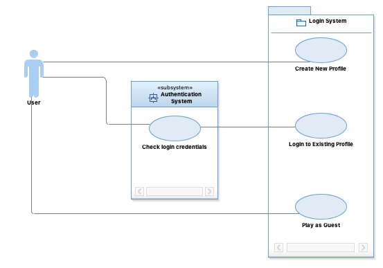
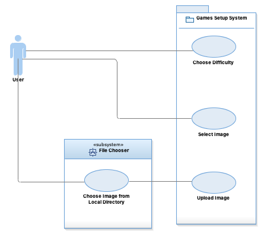

Use Case Models
This is the initial use case model. It should contain use case diagrams as well as the beginning of the text description of your use cases.
Most use cases should be identified and 10%-20% of user case descriptions should be completed
Casual Login Model
A user that wants to create a new profile will be able to do so through the Login system by choosing the "Create a New Profile" option.
Upon choosing this option the user will be prompted to create a new username and password.
Once a username and password is created it will be saved to a persistant storage system.
A user that has previously created a profile and login to their profile through the Login system by choosing the "Login to Existing Profile" option.
Upon choosing this option the user will be prompted via the authenticaion subsystem to enter their username and password.
The authenticaion subsystem will check the user's credentials.
If the authenticaion is a successful, the user will be brought to the Main Menu.
If the authentication fails, the user will be notified and will need to re-enter their username and password.
A user can choose to play as a guest.
Upon choosing this option the system will notify the user that their progress and high scores will not be saved.
The user will be be brought to the Main Menu.

Casual Game Setup Use Case Model
A user that has chosen to start a New Game from the Main Menu or from the Win Game Menu will be prompted to set up their game options.
A user can choose the difficulty of their New Game which will determine the number of squares the chosen image will be split.
Upon choosing a difficulty, a user will be able to choose an image from a pre-defined set or upload their own image.
If the user chooses a pre-defined image they will be brought to the Game Screen.
If the user chooses to upload an image the File Chooser subsystem will prompt the user to choose a file from their local file system.
If the user cancels the File Chooser subsystem, the user will once again be prompted to choose an image from a pre-defined set or upload their own image.
If the user chooses a file that not in an acceptable image format, the user will be asked to choose another file.
If the user chooses a file that is in an acceptable image format, the File Chooser subsystem will then upload the image and make it a choosable option from the pre-defined list.

Fully Dressed Play Game Model
- Title: Play game
- Primary Actor: User (a logged in player)
- Goal in Context: Play a new or loaded puzzle slider game that incorporates the defined settings.
- Scope: Within the main menu of the puzzle slider game
- Level: User goal
- Stakeholders and Interests:
- User: The user expects smooth and intuitive gameplay that minimizes frustration.
- Students: The students/developers expect a functioning application that meets the predefined requirements, such as being able to save users, game state, and high scores.
- Preconditions:
- Application is open.
- Main menu is displayed.
- Postconditions:
- Minimal Guarantees: A message is given to confirm if the creation or loading of the game succeeded or failed.
- Success Guarantees: The display switches from the main menu to the current game interface.
- Trigger: The user selects the button that leads to the game being played.
- Main Success Scenario:
- 1. The user selects on the button to play a game.
- 2. The system incorporates the selected settings into the creation or loading of the game.
- 3. The system outputs a confirmation message saying the game was created or loaded.
- 4. The system replaces the main menu with the current game interface.
- 5. The system displays the original image in use within a grid determined by the difficulty chosen.
- 5. The system removes a single block from the image and grid to allow game movement.
- 6. The system then rearranges the image in accordance to the blocks defined by the grid.
- 6a. If the user opted for loading a previous state, the blocks will be moved the same locations.
- 6b. If the user opted for creating a new game, the blocks will be shuffled and moved to random locations.
- 7. The user selects specified blocks to move them in valid “empty” squares.
- 7a. If the user attempts to move a block to a location with a block already there, then the selected block will remain in its current location.
- 8. The user continues to move blocks until the original image is made, thus causing a successful completion of the game.
- 9. The system displays a message to the user congratulating them on their success.
- 10. The system updates the user’s high score if the current score is greater than their current high score.
- 11. The system replaces the game interface with the main menu.
- Extensions
- 1
- a. Load game:
- 1. The user opts to load a previous game.
- 2. The settings and progress from the previous game are loaded into the current game.
- b. New game:
- 1. The user opts to create a new game.
- 2. A new game is created based on the settings regarding to difficulty and photo selected.
- Technology & Data Variations List